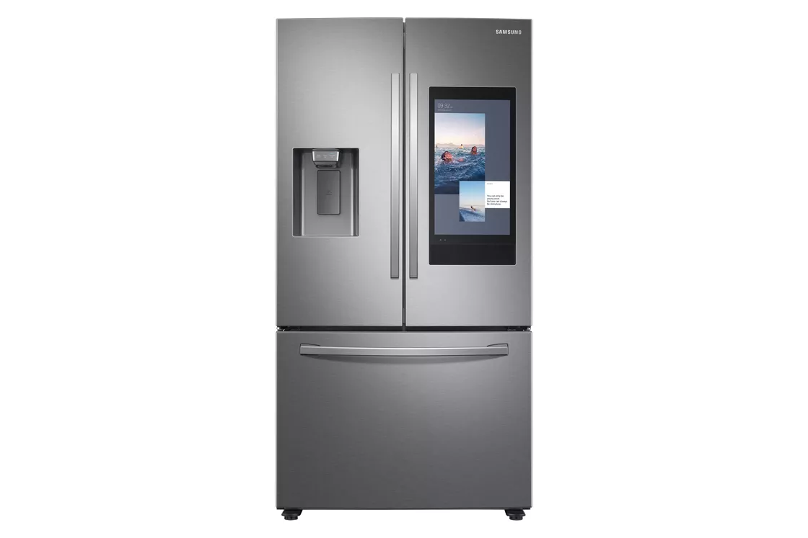
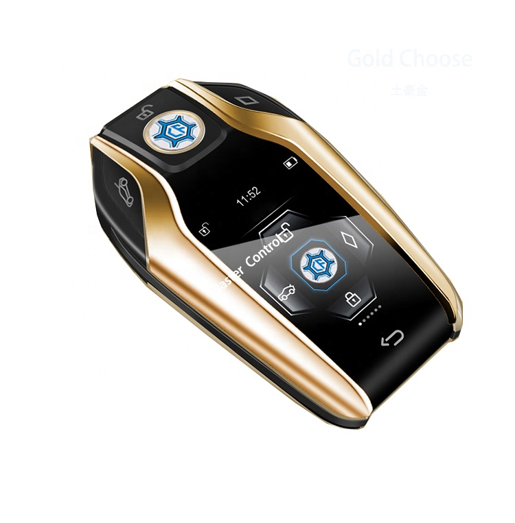
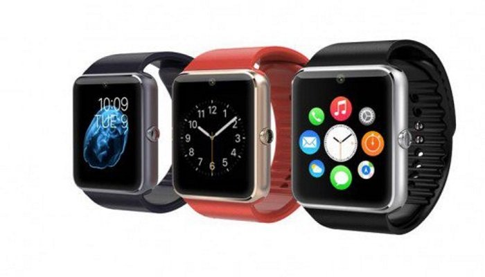
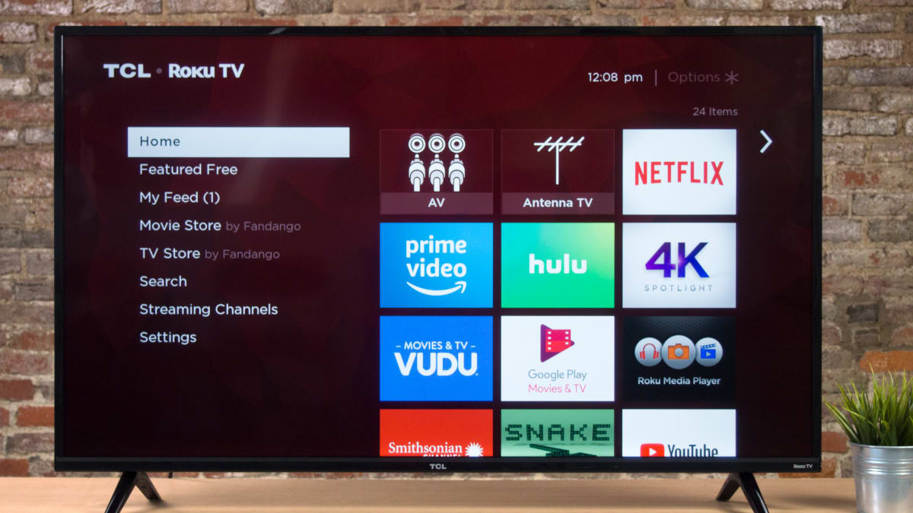

Smart Fridge
Creator: LG
You can check what's in your fridge in real time from anywhere with most smart fridges. Some smart refrigerators also have the ability to display expiration dates on all of your food, allowing you to remember to consume them before they spoil, saving you the cost of having to buy them again.
See more

Smart Key
Creator: Siemens
The smart key is a component of the vehicle's key fob. The antennae in the car's bodywork and the radio pulse generator in the key fob allow it to unlock, lock, or start a vehicle even while it is in the driver's pocket.
See more

Smart Watch
Creator: Steve Mann
A smartwatch is a small portable gadget that is worn on the wrist. They have touchscreens, applications, and frequently monitor your heart rate and other vital indicators, much like smartphones.
See more

Smart TV
Creator: French Firm ("Fast France Advanced Systems")
A smart TV, also known as a connected TV (CTV), is a conventional television set with built-in Internet and interactive Web 2.0 capabilities that allow users to stream music and movies, surf the web, and view photographs. Computers, televisions, and digital media players have all come together to become smart TVs.
See more